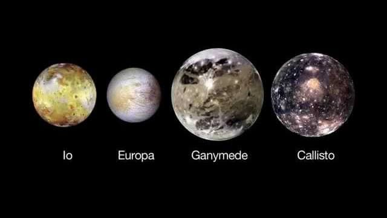
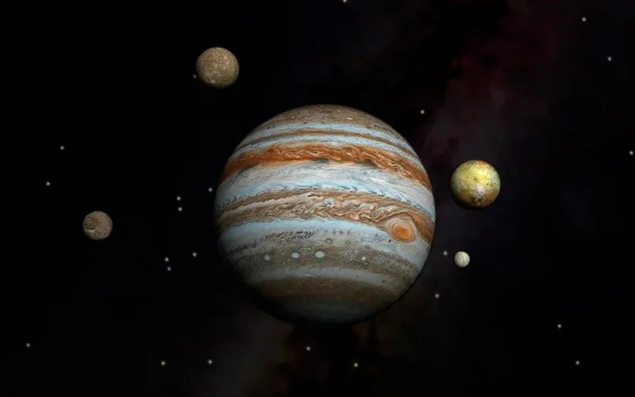

Юпитер
Открыть карту солнечной системыЮпитер, самая большая из планет-гигантов, отделена от Марса поясом астероидов. Масса Юпитера в два раза больше, чем масса всех остальных планет, лун, комет и астероидов системы вместе взятых. По яркости на земном небе он уступает только Венере. Люди наблюдали его с древнейших времён и связывали с сильнейшими богами своих пантеонов. Юпитер — имя римского царя богов.
Основные характеристики
Юпитер является газовым гигантом. Коричневые и белые полосы — это облака соединений серы, которые движутся в атмосфере планеты с чудовищной скоростью. Большое красное пятно Юпитера — гигантский вихрь. С момента его обнаружения в 1664 году он стал заметно меньше, но и теперь в несколько раз превосходит Землю по размерам.
О структуре планеты учёные пока только догадываются. Предположительно она состоит из газов, плавно переходящих в металлическое состояние по мере приближения к ядру. Считается, что ядро Юпитера каменное. Сильнейшее в системе магнитное поле Юпитера воздействует на частицы в миллионах километрах вокруг и даже достигает орбиты Сатурна. Это одна из причин огромного числа спутников у планеты.
В 1610 году астроном Галилео Галилей обнаружил четыре крупнейших спутника Юпитера. В наше время известно 79 объектов, вращающихся вокруг планеты. Некоторые из них напоминают Луну, другие выглядят как большие астероиды. Особый интерес представляет Ио — планета с мощнейшими в системе вулканами. Более мелкие частицы образуют вокруг Юпитера кольца, хотя они не так заметны, как у соседнего Сатурна.
